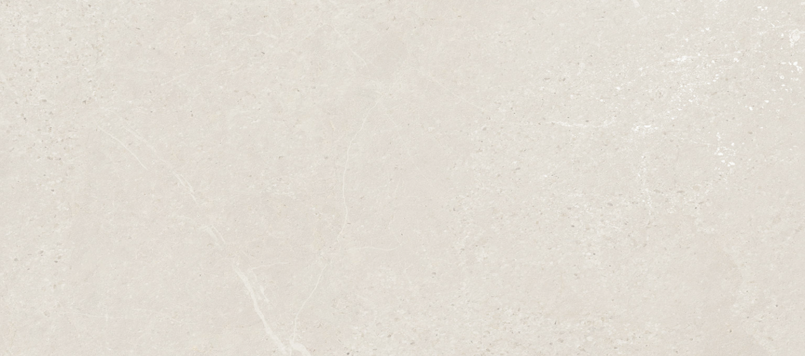
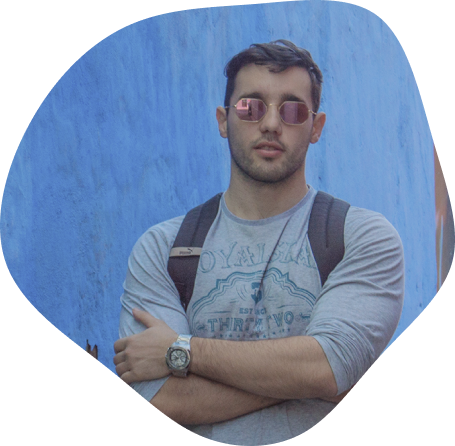

UX & Product designer with a Mediterranean flair
The Romans coined the phrase 'Ex nihilo, nihil fit' which can be translated to ‘Out of nothing, nothing comes' in our modern context. Therefore, I strive to stay actively engaged, whether it's by acquiring new skills and knowledge or by applying them to personal or artistic projects.
Hello! My name is Pablo Elices Pérez, and I am a versatile and multi-skilled designer with broad experience in various fields such as branding or digital media, among others. However, I specialize in UX & Product design, where my Mediterranean essence plays a distinctive role.
 How did I end up here?
Well, let me date it back to my first art direction act. It was a summer day in my childhood when I was given a Warhammer’s set. I started by painting the figures and later created the scenery for it.
Later, in high school, from after having to make my first HTML3 website during a computer science course, I started to be curious about digital art.
Nevertheless, it wasn’t until I entered university that I discovered the concept of art direction. In fact, this, along with branding and semiotics (the study of symbols and signs), is the field I've found most enjoyable, to the extent that I keep being passionate about them even today. Thus, whenever I create a product, I seek to incorporate this threefold approach. In turn, not only I make campaigns responding holistically to a well-defined and elaborated aesthetic and strategy, but that also use the appropriate symbols for firstly awaken interest in the target audience and secondly give meaning and sense to the product.
Moreover, I love languages, I keep studying them and I am grateful to have been able to practice them in my experiences in Sweden and Hungary. While it is true I barely remember those languages nowadays, they enhanced my skills in French, Italian and most notably in English, the language in which I've both studied and worked.
On a personal note, I love outdoor activities such as photography but especially doing calisthenics in the park. I reckon this sport helps me to be constant, flexible, resilient and focus to conquer challenges. On the contrary, I also find great satisfaction in continuously educating myself in areas related to my profession. As evidence, I can talk about my knowledge in motion graphics, my certifications and my website aprenderuxui.com
Finally I would like to highlight among my achievements:
- My website aprenderuxui.com, which after 1 year of activity has reached the 3.000 average monthly unique visitors and growing.
- The Gaydar App Redesign, which together with developers managed to improve incredibly The Easter 2019 Gaydar campaign after which 7000 old users came back.